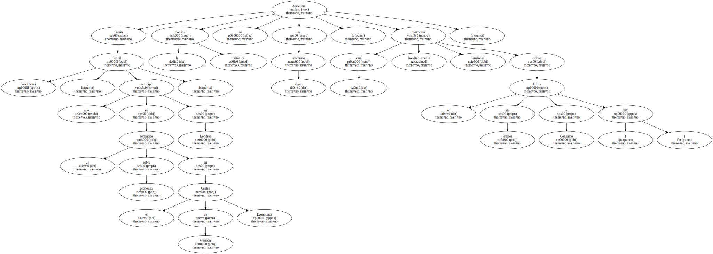
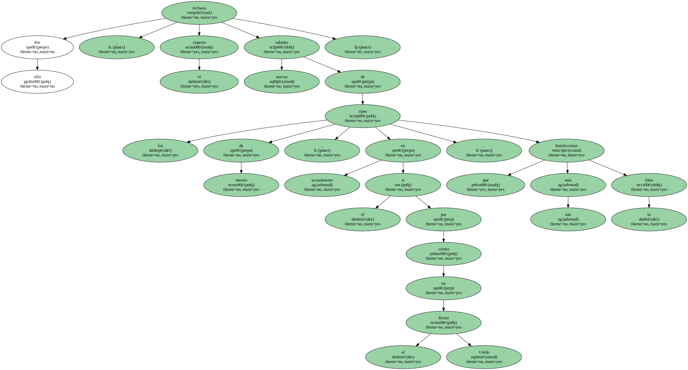
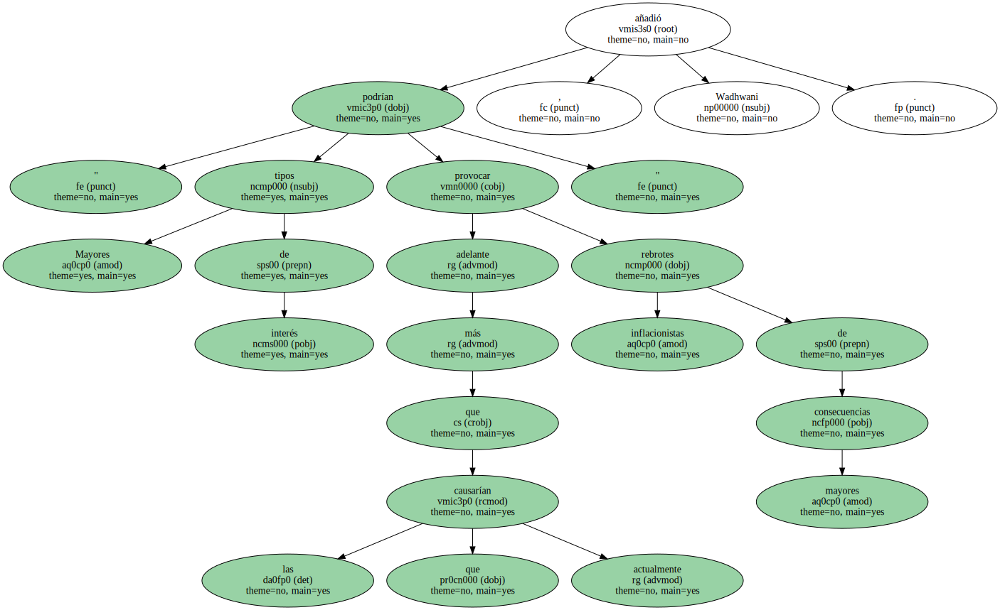
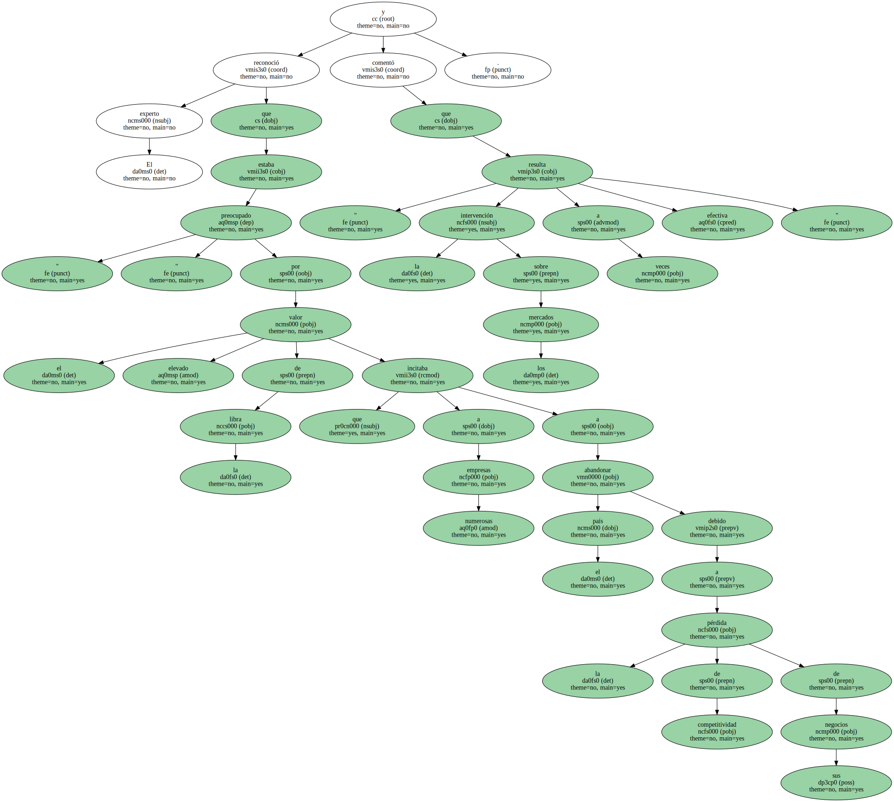
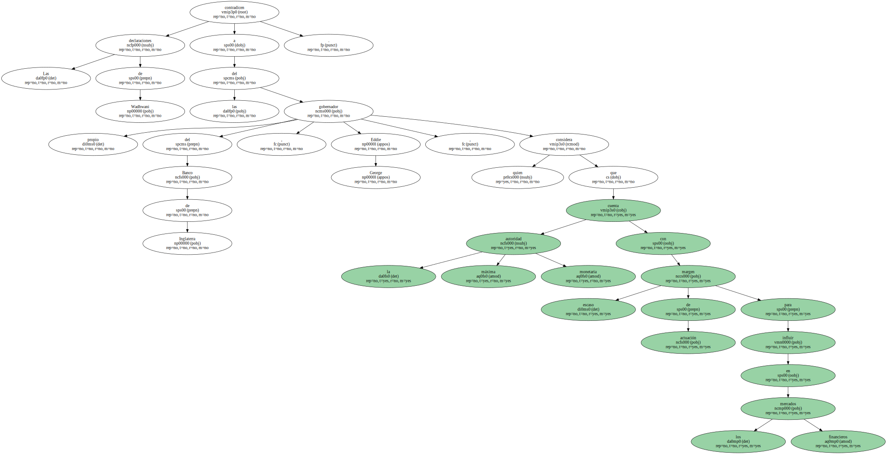
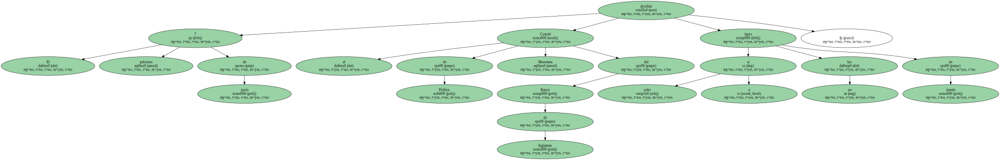

Uno de los miembros del Comité de Política Monetaria del Banco de Inglaterra , encargado de decidir sobre los tipos de interés , advirtió hoy , miércoles , que el alto valor de la libra terminará afectando a largo plazo a la inflación.

Según Sushil Wadhwani , que participó en un seminario sobre economía en el Centro de Gestión Económica en Londres , la moneda británica se devaluará en algún momento , lo que inevitablemente provocará tensiones sobre el Indice de Precios al Consumo ( IPC ).
Por ello , el experto rechaza nuevas subidas de los tipos de interés , actualmente en el 6 por ciento en el Reino Unido , que fortalecerían aún más la libra.
" Mayores tipos de interés podrían provocar más adelante rebrotes inflacionistas de mayores consecuencias que las que causarían actualmente " , añadió Wadhwani.
El experto reconoció que estaba " preocupado " por el elevado valor de la libra que incitaba a numerosas empresas a abandonar el país debido a la pérdida de competitividad de sus negocios y comentó que " la intervención sobre los mercados resulta a veces efectiva ".
Las declaraciones de Wadhwani contradicen a las del propio gobernador del Banco de Inglaterra , Eddie George , quien considera que la máxima autoridad monetaria cuenta con escaso margen de actuación para influir en los mercados financieros.
El próximo 7 de junio el Comité de Política Monetaria del Banco de Inglaterra decidirá si sube o no los tipos de interés.
